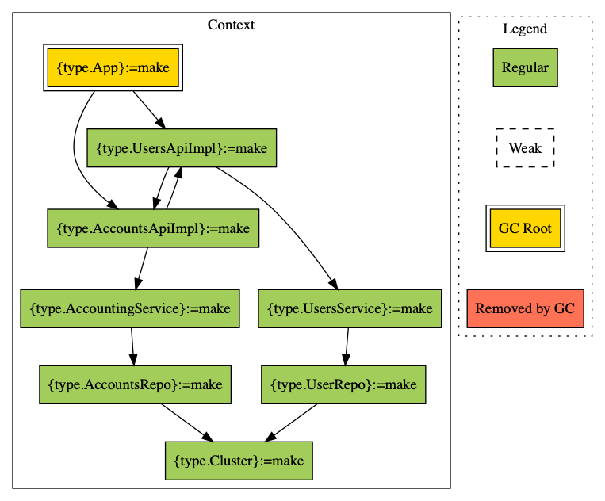

Debugging
Testing Plans
Use Injector#assert method to test whether the plan will execute correctly when passed to Injector#produce.
import distage.{DIKey, Roots, ModuleDef, Injector}
class A(b: B)
class B
def badModule = new ModuleDef {
make[A]
make[B].fromEffect(zio.Task { ??? })
}
// the effect types are mismatched - `badModule` uses `zio.Task`, but we expect `cats.effect.IO`
Injector[cats.effect.IO]().assert(badModule, Roots.target[A])
// izumi.distage.model.exceptions.PlanVerificationException: Plan verification failed, issues were:
//
//
// - IncompatibleEffectType({type.repl.MdocSession::repl.MdocSession.App0::repl.MdocSession.App0.B},{type.repl.MdocSession::repl.MdocSession.App0::repl.MdocSession.App0.B} (debugging.md:22) := effect[λ %0 → zio.ZIO[-Any,+Throwable,+0]]{effect.{type.repl.MdocSession::repl.MdocSession.App0::repl.MdocSession.App0.B}/zio.ZIO[-Any,+Throwable,+Nothing]},λ %0 → cats.effect.IO[+0],λ %0 → zio.ZIO[-Any,+Throwable,+0])
//
// Visited keys:
//
//
// - {type.repl.MdocSession::repl.MdocSession.App0::repl.MdocSession.App0.A}
//
// at izumi.distage.planning.solver.PlanVerifier$PlanVerifierResult.throwOnError(PlanVerifier.scala:436)
// at izumi.distage.model.Injector.assert(Injector.scala:289)
// at izumi.distage.model.Injector.assert$(Injector.scala:283)
// at izumi.distage.InjectorDefaultImpl.assert(InjectorDefaultImpl.scala:23)
// at repl.MdocSession$App0$$anonfun$3.apply$mcV$sp(debugging.md:30)
// at repl.MdocSession$App0$$anonfun$3.apply(debugging.md:30)
// at repl.MdocSession$App0$$anonfun$3.apply(debugging.md:30)
def goodModule = new ModuleDef {
make[A]
make[B].fromEffect(cats.effect.IO(new B))
}
// the effect types in `goodModule` and here match now
Injector[cats.effect.IO]().assert(goodModule, Roots.target[A])
Pretty-printing plans
You can print the output of plan.render() to get detailed info on what will happen during instantiation. The printout includes source and line numbers so your IDE can show you where the binding was defined!
import distage.PlannerInput
val plan = Injector().plan(goodModule, Roots.target[A])
// plan: izumi.distage.model.plan.DIPlan = DIPlan(DG(IncidenceMatrix(Map({effect.{type.repl.MdocSession::repl.MdocSession.App0::repl.MdocSession.App0.B}/cats.effect.IO[+MdocSession::App0::B]} -> Set({type.repl.MdocSession::repl.MdocSession.App0::repl.MdocSession.App0.B}), {type.repl.MdocSession::repl.MdocSession.App0::repl.MdocSession.App0.B} -> Set({type.repl.MdocSession::repl.MdocSession.App0::repl.MdocSession.App0.A}), {type.repl.MdocSession::repl.MdocSession.App0::repl.MdocSession.App0.A} -> Set())),IncidenceMatrix(Map({effect.{type.repl.MdocSession::repl.MdocSession.App0::repl.MdocSession.App0.B}/cats.effect.IO[+MdocSession::App0::B]} -> Set(), {type.repl.MdocSession::repl.MdocSession.App0::repl.MdocSession.App0.B} -> Set({effect.{type.repl.MdocSession::repl.MdocSession.App0::repl.MdocSession.App0.B}/cats.effect.IO[+MdocSession::App0::B]}), {type.repl.MdocSession::repl.MdocSession.App0::repl.MdocSession.App0.A} -> Set({type.repl.MdocSession::repl.MdocSession.App0::repl.MdocSession.App0.B}))),GraphMeta(Map({effect.{type.repl.MdocSession::repl.MdocSession.App0::repl.MdocSession.App0.B}/cats.effect.IO[+MdocSession::App0::B]} -> {effect.{type.repl.MdocSession::repl.MdocSession.App0::repl.MdocSession.App0.B}/cats.effect.IO[+MdocSession::App0::B]} (debugging.md:41) := value cats.effect.IO$Delay#182489284, {type.repl.MdocSession::repl.MdocSession.App0::repl.MdocSession.App0.B} -> {type.repl.MdocSession::repl.MdocSession.App0::repl.MdocSession.App0.B} (debugging.md:41) := effect[λ %0 → cats.effect.IO[+0]]{effect.{type.repl.MdocSession::repl.MdocSession.App0::repl.MdocSession.App0.B}/cats.effect.IO[+MdocSession::App0::B]}, {type.repl.MdocSession::repl.MdocSession.App0::repl.MdocSession.App0.A} -> {type.repl.MdocSession::repl.MdocSession.App0::repl.MdocSession.App0.A} (debugging.md:40) :=
// call(π:Class(repl.MdocSession::repl.MdocSession.App0::repl.MdocSession.App0.B): repl.MdocSession::repl.MdocSession.App0::repl.MdocSession.App0.A[32m) {
// arg b: repl.MdocSession::repl.MdocSession.App0::repl.MdocSession.App0.B <- {type.repl.MdocSession::repl.MdocSession.App0::repl.MdocSession.App0.B}
// }))),PlannerInput(
// make[{type.izumi.distage.model.PlannerInput}].from(value(PlannerInput(
// make[{type.repl.MdocSession::repl.MdocSession.App0::repl.MdocSession.App0.B}].from(effect[λ %0 → cats.effect.IO[+0]](value(IO$1511321074: cats.effect.IO[+MdocSession::App0::B]))) ((debugging.md:41))
// make[{type.repl.MdocSession::repl.MdocSession.App0::repl.MdocSession.App0.A}].from(call(π:Class(repl.MdocSession::repl.MdocSession.App0::repl.MdocSession.App0.B): repl.MdocSession::repl.MdocSession.App0::repl.MdocSession.App0.A)) ((debugging.md:40)),Activation(Map()),Of(NonEmptySet({type.repl.MdocSession::repl.MdocSession.App0::repl.MdocSession.App0.A}))): izumi.distage.model.PlannerInput)) ((InjectorDefaultImpl.scala:120))
// make[{type.repl.MdocSession::repl.MdocSession.App0::repl.MdocSession.App0.B}].from(effect[λ %0 → cats.effect.IO[+0]](value(IO$1511321074: cats.effect.IO[+MdocSession::App0::B]))) ((debugging.md:41))
// make[{type.izumi.distage.model.effect.QuasiAsync[=λ %1:0 → 1:0]}].from(value(izumi.distage.model.effect.QuasiAsync$$anon$1@68136e99: izumi.distage.model.effect.QuasiAsync[=λ %1:0 → 1:0])) ((IdentitySupportModule.scala:19))
// make[{type.repl.MdocSession::repl.MdocSession.App0::repl.MdocSession.App0.A}].from(call(π:Class(repl.MdocSession::repl.MdocSession.App0::repl.MdocSession.App0.B): repl.MdocSession::repl.MdocSession.App0::repl.MdocSession.App0.A)) ((debugging.md:40))
// make[{type.izumi.distage.model.recursive.Bootloader}].from(call(π:Class(izumi.distage.InjectorFactory, izumi.distage.model.definition.BootstrapModule, izumi.distage.model.definition.Activation, izumi.distage.model.definition.Module, izumi.distage.model.PlannerInput): izumi.distage.model.recursive.Bootloader)) ((InjectorDefaultImpl.scala:115))
// make[{type.izumi.functional.mono.Entropy[+λ %1:0 → 1:0]}].from(value(izumi.functional.mono.Entropy$Standard$@588e1b82: izumi.functional.mono.Entropy::izumi.functional.mono.Entropy.Standard)) ((IdentitySupportModule.scala:21))
// make[{type.izumi.distage.model.definition.Activation}].from(value(Activation(Map()): izumi.distage.model.definition.Activation)) ((InjectorDefaultImpl.scala:122))
// make[{type.izumi.functional.mono.Clock[+λ %1:0 → 1:0]}].from(value(izumi.functional.mono.Clock$Standard$@71e61c8c: izumi.functional.mono.Clock::izumi.functional.mono.Clock.Standard)) ((IdentitySupportModule.scala:20))
// make[{type.izumi.distage.model.effect.QuasiIORunner[=λ %1:0 → 1:0]}].from(value(izumi.distage.model.effect.QuasiIORunner$IdentityImpl$@4e8bf84b: izumi.distage.model.effect.QuasiIORunner[=λ %1:0 → 1:0])) ((IdentitySupportModule.scala:18))
// make[{type.izumi.distage.InjectorFactory}].from(value(distage.Injector$@5f38af32: izumi.distage.InjectorFactory)) ((InjectorDefaultImpl.scala:117))
// make[{type.izumi.distage.model.definition.BootstrapModule}].from(value(
// make[{type.izumi.distage.model.provisioning.strategies.ResourceStrategy}].from(call(π:Class(): izumi.distage.provisioning.strategies.ResourceStrategyDefaultImpl)) ((BootstrapLocator.scala:128))
// make[{type.izumi.distage.model.reflection.MirrorProvider}].from(value(izumi.distage.model.reflection.MirrorProvider$Impl$@3fcf108b: izumi.distage.model.reflection.MirrorProvider::izumi.distage.model.reflection.MirrorProvider.Impl)) ((BootstrapLocator.scala:108))
// many[{type.scala.collection.immutable.Set[=PlanningHook]}] ((BootstrapLocator.scala:133))
// many[{type.scala.collection.immutable.Set[=PlanningObserver]}] ((BootstrapLocator.scala:132))
// make[{type.izumi.distage.model.provisioning.ProvisioningFailureInterceptor}].from(call(π:Class(): izumi.distage.model.provisioning.ProvisioningFailureInterceptor::izumi.distage.model.provisioning.ProvisioningFailureInterceptor.DefaultImpl)) ((BootstrapLocator.scala:130))
// make[{type.izumi.distage.planning.BindingTranslator}].from(call(π:Class(): izumi.distage.planning.BindingTranslator::izumi.distage.planning.BindingTranslator.Impl)) ((BootstrapLocator.scala:138))
// make[{type.izumi.distage.model.planning.ForwardingRefResolver}].from(call(π:Class(izumi.distage.planning.sequential.FwdrefLoopBreaker): izumi.distage.planning.sequential.ForwardingRefResolverDefaultImpl)) ((BootstrapLocator.scala:117))
// make[{type.izumi.distage.model.planning.PlanningObserver}].from(call(π:Class(scala.collection.immutable.Set[=PlanningObserver]): izumi.distage.planning.PlanningObserverAggregate)) ((BootstrapLocator.scala:135))
// make[{type.izumi.distage.model.provisioning.strategies.ProxyStrategy}].from(call(π:Class(): izumi.distage.provisioning.strategies.ProxyStrategyFailingImpl)).tagged(Set(AxisTag(cycles:disable))) ((BootstrapLocator.scala:143))
// make[{type.izumi.distage.model.provisioning.strategies.EffectStrategy}].from(call(π:Class(): izumi.distage.provisioning.strategies.EffectStrategyDefaultImpl)) ((BootstrapLocator.scala:127))
// make[{type.izumi.distage.model.planning.PlanAnalyzer}].from(call(π:Class(): izumi.distage.planning.PlanAnalyzerDefaultImpl)) ((BootstrapLocator.scala:110))
// make[{type.izumi.distage.model.planning.SanityChecker}].from(call(π:Class(izumi.distage.model.planning.PlanAnalyzer): izumi.distage.planning.sequential.SanityCheckerDefaultImpl)) ((BootstrapLocator.scala:118))
// make[{type.izumi.distage.model.provisioning.PlanInterpreter}].from(call(π:Class(izumi.distage.model.provisioning.strategies.SetStrategy, izumi.distage.model.provisioning.strategies.ProxyStrategy, izumi.distage.model.provisioning.strategies.ProviderStrategy, izumi.distage.model.provisioning.strategies.ImportStrategy, izumi.distage.model.provisioning.strategies.InstanceStrategy, izumi.distage.model.provisioning.strategies.EffectStrategy, izumi.distage.model.provisioning.strategies.ResourceStrategy, izumi.distage.model.provisioning.ProvisioningFailureInterceptor, izumi.distage.provisioning.ProvisionOperationVerifier, scala.Boolean, izumi.distage.model.planning.PlanAnalyzer): izumi.distage.provisioning.PlanInterpreterDefaultRuntimeImpl)) ((BootstrapLocator.scala:121))
// make[{type.izumi.distage.planning.solver.GraphPreparations}].from(call(π:Class(izumi.distage.planning.BindingTranslator): izumi.distage.planning.solver.GraphPreparations)) ((BootstrapLocator.scala:113))
// make[{type.izumi.distage.model.provisioning.proxies.ProxyProvider}].from(call(π:Class(): izumi.distage.provisioning.strategies.cglib.CglibProxyProvider)).tagged(Set(AxisTag(cycles:proxy))) ((BootstrapLocator.scala:140))
// make[{type.izumi.distage.model.provisioning.strategies.InstanceStrategy}].from(call(π:Class(): izumi.distage.provisioning.strategies.InstanceStrategyDefaultImpl)) ((BootstrapLocator.scala:126))
// make[{type.izumi.distage.planning.solver.PlanSolver}].from(call(π:Class(izumi.distage.planning.solver.SemigraphSolver[=DIKey,=Int,=ExecutableOp::InstantiationOp], izumi.distage.planning.solver.GraphPreparations): izumi.distage.planning.solver.PlanSolver::izumi.distage.planning.solver.PlanSolver.Impl)) ((BootstrapLocator.scala:112))
// make[{type.scala.Boolean@izumi.distage.interpreter.full-stacktraces}].from(value(true: scala.Boolean)) ((BootstrapLocator.scala:104))
// make[{type.izumi.distage.model.Planner}].from(call(π:Class(izumi.distage.model.planning.ForwardingRefResolver, izumi.distage.model.planning.SanityChecker, izumi.distage.model.planning.PlanningObserver, izumi.distage.model.planning.PlanningHook, izumi.distage.planning.solver.PlanSolver): izumi.distage.planning.PlannerDefaultImpl)) ((BootstrapLocator.scala:120))
// make[{type.izumi.distage.model.provisioning.strategies.ProxyStrategy}].from(call(π:Class(izumi.distage.model.provisioning.proxies.ProxyProvider, izumi.distage.model.reflection.MirrorProvider): izumi.distage.provisioning.strategies.ProxyStrategyDefaultImpl)) ((BootstrapLocator.scala:144))
// make[{type.izumi.distage.model.provisioning.proxies.ProxyProvider}].from(call(π:Class(): izumi.distage.model.provisioning.proxies.ProxyProvider::izumi.distage.model.provisioning.proxies.ProxyProvider.ProxyProviderFailingImpl)) ((BootstrapLocator.scala:141))
// make[{type.izumi.distage.provisioning.ProvisionOperationVerifier}].from(call(π:Class(izumi.distage.model.reflection.MirrorProvider): izumi.distage.provisioning.ProvisionOperationVerifier::izumi.distage.provisioning.ProvisionOperationVerifier.Default)) ((BootstrapLocator.scala:106))
// make[{type.izumi.distage.model.provisioning.strategies.SetStrategy}].from(call(π:Class(): izumi.distage.provisioning.strategies.SetStrategyDefaultImpl)) ((BootstrapLocator.scala:123))
// make[{type.izumi.distage.planning.sequential.FwdrefLoopBreaker}].from(call(π:Class(izumi.distage.model.reflection.MirrorProvider, izumi.distage.model.planning.PlanAnalyzer): izumi.distage.planning.sequential.FwdrefLoopBreaker::izumi.distage.planning.sequential.FwdrefLoopBreaker.FwdrefLoopBreakerDefaultImpl)) ((BootstrapLocator.scala:146))
// make[{type.izumi.distage.planning.solver.SemigraphSolver[=DIKey,=Int,=ExecutableOp::InstantiationOp]}].from(call(π:Class(): izumi.distage.planning.solver.SemigraphSolver::izumi.distage.planning.solver.SemigraphSolver.SemigraphSolverImpl[=DIKey,=Int,=ExecutableOp::InstantiationOp])) ((BootstrapLocator.scala:115))
// make[{type.izumi.distage.model.provisioning.strategies.ImportStrategy}].from(call(π:Class(): izumi.distage.provisioning.strategies.ImportStrategyDefaultImpl)) ((BootstrapLocator.scala:125))
// make[{type.izumi.distage.model.planning.PlanningHook}].from(call(π:Class(scala.collection.immutable.Set[=PlanningHook]): izumi.distage.planning.PlanningHookAggregate)) ((BootstrapLocator.scala:136))
// make[{type.izumi.distage.model.provisioning.strategies.ProviderStrategy}].from(call(π:Class(): izumi.distage.provisioning.strategies.ProviderStrategyDefaultImpl)) ((BootstrapLocator.scala:124)): izumi.distage.model.definition.BootstrapModule)) ((InjectorDefaultImpl.scala:118))
// make[{type.izumi.distage.model.effect.QuasiApplicative[=λ %1:0 → 1:0]}].from(value(izumi.distage.model.effect.QuasiIO$QuasiIOIdentity$@3d82987a: izumi.distage.model.effect.QuasiApplicative[=λ %1:0 → 1:0])) ((IdentitySupportModule.scala:16))
// make[{type.izumi.distage.model.definition.Module@defaultModule}].from(value(
// make[{type.izumi.distage.model.effect.QuasiAsync[=λ %1:0 → 1:0]}].from(value(izumi.distage.model.effect.QuasiAsync$$anon$1@68136e99: izumi.distage.model.effect.QuasiAsync[=λ %1:0 → 1:0])) ((IdentitySupportModule.scala:19))
// make[{type.izumi.distage.model.effect.QuasiApplicative[=λ %1:0 → 1:0]}].from(value(izumi.distage.model.effect.QuasiIO$QuasiIOIdentity$@3d82987a: izumi.distage.model.effect.QuasiApplicative[=λ %1:0 → 1:0])) ((IdentitySupportModule.scala:16))
// make[{type.izumi.functional.mono.Entropy[+λ %1:0 → 1:0]}].from(value(izumi.functional.mono.Entropy$Standard$@588e1b82: izumi.functional.mono.Entropy::izumi.functional.mono.Entropy.Standard)) ((IdentitySupportModule.scala:21))
// make[{type.izumi.distage.model.effect.QuasiIO[=λ %1:0 → 1:0]}].from(value(izumi.distage.model.effect.QuasiIO$QuasiIOIdentity$@3d82987a: izumi.distage.model.effect.QuasiIO[=λ %1:0 → 1:0])) ((IdentitySupportModule.scala:17))
// make[{type.izumi.functional.mono.Clock[+λ %1:0 → 1:0]}].from(value(izumi.functional.mono.Clock$Standard$@71e61c8c: izumi.functional.mono.Clock::izumi.functional.mono.Clock.Standard)) ((IdentitySupportModule.scala:20))
// make[{type.izumi.distage.model.effect.QuasiIORunner[=λ %1:0 → 1:0]}].from(value(izumi.distage.model.effect.QuasiIORunner$IdentityImpl$@4e8bf84b: izumi.distage.model.effect.QuasiIORunner[=λ %1:0 → 1:0])) ((IdentitySupportModule.scala:18)): izumi.distage.model.definition.Module)) ((InjectorDefaultImpl.scala:119))
// make[{type.izumi.distage.model.effect.QuasiIO[=λ %1:0 → 1:0]}].from(value(izumi.distage.model.effect.QuasiIO$QuasiIOIdentity$@3d82987a: izumi.distage.model.effect.QuasiIO[=λ %1:0 → 1:0])) ((IdentitySupportModule.scala:17)),Activation(Map()),Of(NonEmptySet({type.repl.MdocSession::repl.MdocSession.App0::repl.MdocSession.App0.A}))))
println(plan.render())
// 1: {effect.{type.MdocSession::App0::B}} (debugging.md:41) := value cats.effect.IO$Delay#182489284
// 2: {type.MdocSession::App0::B} (debugging.md:41) := effect[λ %0 → cats.effect.IO[+0]]{effect.{type.MdocSession::App0::B}}
// 3: {type.MdocSession::App0::A} (debugging.md:40) :=
// 4: call(π:Class(MdocSession::App0::B): MdocSession::App0::A[32m) {
// 5: arg b: MdocSession::App0::B <- {type.MdocSession::App0::B}
// 6: }

You can also query a plan to see the dependencies and reverse dependencies of a specific class and their order of instantiation:
// Print dependencies
println(plan.renderDeps(DIKey[A]))
// ➤ {type.MdocSession::App0::A} (debugging.md:40)
// ⮑ 1: {type.MdocSession::App0::B} (debugging.md:41)
// ⮑ 2: {effect.{type.MdocSession::App0::B}} (debugging.md:41)
//
// Print reverse dependencies
println(plan.renderDependees(DIKey[B]))
// ➤ {type.MdocSession::App0::B} (debugging.md:41)
// ↖ 1: {type.MdocSession::App0::A} (debugging.md:40)
//
The printer highlights circular dependencies:

To debug macros used by distage you may use the following Java Properties:
# izumi-reflect macros
-Dizumi.debug.macro.rtti=true
# izumi.distage.constructors.* macros
-Dizumi.debug.macro.distage.constructors=true
# Functoid macro
-Dizumi.debug.macro.distage.functoid=true
Graphviz rendering
Add GraphDumpBootstrapModule to your Injector’s configuration to enable writing GraphViz files with a graphical representation of the OrderedPlan. Data will be saved to ./target/plan-last-full.gv and ./target/plan-last-nogc.gv in the current working directory.
import distage.{GraphDumpBootstrapModule, Injector}
Injector(GraphDumpBootstrapModule)
// res6: Injector[izumi.fundamentals.platform.functional.package.Identity[A]] = izumi.distage.InjectorDefaultImpl@d49b1b4
You’ll need a GraphViz installation to render these files into a viewable PNG images:
dot -Tpng target/plan-last-nogc.gv -o out.png

Command-line activation
You may activate GraphViz dump for a distage-framework Role-based application by passing a --debug-dump-graph option:
./launcher --debug-dump-graph :myrole
Testkit activation
You may activate GraphViz dump in distage-testkit tests by setting PlanningOptions(addGraphVizDump = true) in config:
import izumi.distage.testkit.scalatest.Spec2
import izumi.distage.testkit.TestConfig
import izumi.distage.framework.config.PlanningOptions
final class MyTest extends Spec2[zio.IO] {
override def config: TestConfig = super.config.copy(
planningOptions = PlanningOptions(
addGraphVizDump = true,
)
)
}
Launcher activation
PlanningOptions are also modifiable in distage-framework applications:
import distage.{Module, ModuleDef}
import izumi.distage.framework.config.PlanningOptions
import izumi.distage.roles.RoleAppMain
import zio.IO
abstract class MyRoleLauncher extends RoleAppMain.LauncherBIO2[IO] {
override protected def roleAppBootOverrides(argv: RoleAppMain.ArgV): Module = new ModuleDef {
make[PlanningOptions].from(PlanningOptions(addGraphVizDump = true))
}
}